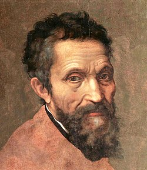

Dama de l'ermini
Galeria
Formulari
Creador
Inici
Descripció
Aquest quadre és una pintura al fresc plasmada sobre una fina làmina de guix en forma rectangular. Les línies compositives diagonals aporten a l'escena un gran dinamisme només trencat per la gamma de colors freds que asserenen l'ambient. La perspectiva utilitzada pel pintor no és menys que perfecta, aconseguida amb una sèrie de complicats punts de fuga. La Capella Sixtina va ser construïda entre 1475 i 1481 per ordre es Sixto IV, Papa que dóna nom a l'estada. La zona inferior de la mateixa es troba decorada per pintures al fresc realitzades pels pintors més importants de l'època, com Sandro Botticelli, Perugino, Signorelli, Ghirlandaio, i Pinturicchio. En 1508, el Papa Juli II s'encarregaria a Miquel Àngel la decoració de la volta de la capella. El pintor va dividir la volta creant uns falsos marcs arquitectònics, separats per deu arcs faixons que creaven nou sectors transversals. Utilitza a més falses cornises per crear tres registres en l'espai: l'inferior, les llunetes o part superior, i el central. A la zona central apareixen els triangles, petxines i trons, on s'ubiquen les escenes bíbliques de l'Antic Testament, set profetes, cinc sibil·les, i com a escena principal, la creació d'Adam. Miguel Ángel va trigar quatre anys a realitzar aquesta magnífica obra. Cal afegir que la volta mesura uns quaranta metres de llarg per tretze d'ample, i presenta una dificultat afegida a causa de la presència de les llunetes.
Autor
Michelangelo Buonarroti (Caprese 6 de març de 1475 - Roma 18 de febrer de 1564), conegut en espanyol com Miquel Àngel, va ser un arquitecte, escultor i pintor italià renaixentista, considerat un dels més grans artistes de la història tant per les seves escultures com per les seves pintures i obra arquitectónica.1 Va desenvolupar la seva tasca artística al llarg de més de setanta anys entre Florència i Roma, que era on vivien els seus grans mecenes, la família Mèdici de Florència i els diferents papes romans. Va ser el primer artista occidental del que es van publicar dues biografies en vida: Le Vite, de Giorgio Vasari, publicada en 1550 en la seva primera edició, en la qual va ser l'únic artista viu inclòs, 2 i Vita de Michelangelo Buonarroti, escrita en 1553 per Ascanio Condivi, pintor i deixeble de Miquel Àngel, que recull les dades facilitades pel mateix Buonarroti.3 va ser molt admirat pels seus contemporanis, que l'anomenaven el Divino.4 Benedetto Varchi, el 12 de febrer de 1560, li va enviar una carta en nom de tots els florentins dient-li: ... tota aquesta ciutat desitja submisament poder-vos veure i honrar tant de prop com de lluny ... La vostra Excel·lència ens faria un gran favor si volgués honrar amb la seva presència la seva pàtria. Tolnay (1978, pàg. 14) Va triomfar en totes les arts en què va treballar, caracteritzant-se per la seva perfeccionismo.a L'escultura, segons havia declarat, era la seva predilecta i la primera a la qual es va dedicar; a continuació, la pintura, quasi com una imposició per part del papa Juli II, i que es va concretar en una obra excepcional que magnifica la volta de la Capella Sixtina; i ja en els seus últims anys, va realitzar projectes arquitectònics.
Retrat de Michelangelo Buonarroti

Zoom obra